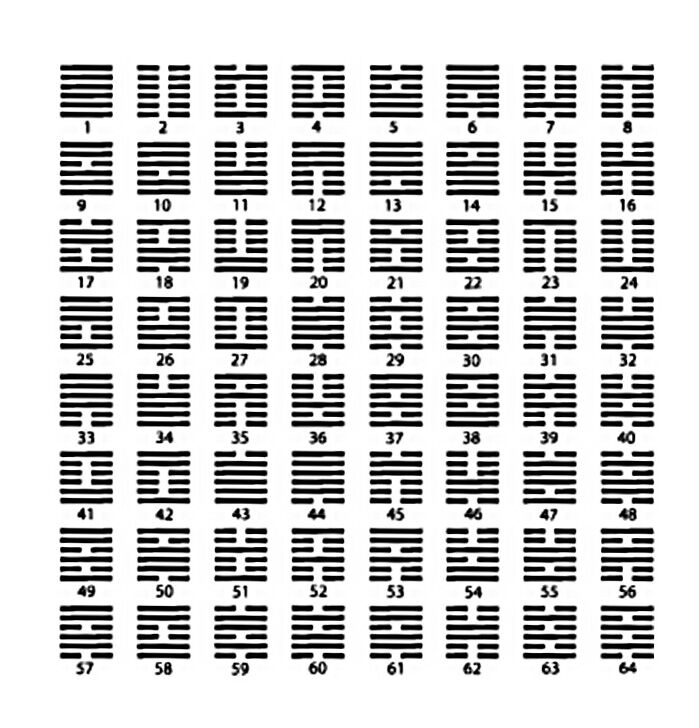

C'est en 750 av J.C. qu'apparaissent les premières traces d'un système binaire.
Issu du livre chinois
Yijing (Yi King).
Il est révélé à
Gottfried Leibniz
par le Père jésuite Bouvet
(Lire l'histoire)

En architecture informatique, un mot est une unité
de base manipulée par un microprocesseur. On parle
aussi de mot machine. La taille d’un mot s’exprime
en bits. Elle est souvent utilisée pour classer
les microprocesseurs (32 bits, 64 bits, etc.).
Toutes choses étant égales par ailleurs,
un microprocesseur est d’autant plus rapide que
ses mots sont longs, car les données qu'il traite
à chaque cycle sont plus importantes.
- Donnée de 8 bits : « octet », parfois abusivement « byte »
- Donnée de 16 bits : « word » ou « mot », parfois « seizet » voire « doublet »
- Donnée de 32 bits : « dword » ou « double mot », parfois (rarement) « trente-deuzet »
- Donnée de 64 bits : « qword » ou « quadruple mot »
En savoir plus